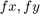
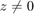
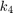
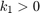

Collect Calibration Pattern Images
This sample is used to take snapshots of a calibration pattern from live webcam. These images can be later used for camera calibration.
Contents
Camera Calibration and 3D Reconstruction
The functions in the calib3d module use a so-called pinhole camera model. In this model, a scene view is formed by projecting 3D points into the image plane using a perspective transformation.
or
![$$ s \left[ {\matrix{ u \cr v \cr 1 }} \right] =
\left[ {\matrix{ f_x & 0 & c_x \cr
0 & f_y & c_y \cr
0 & 0 & 1 }} \right]
\left[ {\matrix{ r_{11} & r_{12} & r_{13} & t_1 \cr
r_{21} & r_{22} & r_{23} & t_2 \cr
r_{31} & r_{32} & r_{33} & t_3 }} \right]
\left[ {\matrix{ X \cr Y \cr Z \cr 1 }} \right]$$](calibration_capture_demo_eq05685871777969449710.png)
where:
 are the coordinates of a 3D point in the world coordinate space
are the coordinates of a 3D point in the world coordinate space
 are the coordinates of the projection point in pixels
are the coordinates of the projection point in pixels
- is a camera matrix, or a matrix of intrinsic parameters
- is a principal point that is usually at the image center
-  are the focal lengths expressed in pixel units
Thus, if an image from the camera is scaled by a factor, all of these parameters should be scaled (multiplied/divided, respectively) by the same factor. The matrix of intrinsic parameters does not depend on the scene viewed. So once estimated, it can be re-used as long as the focal length is fixed (in case of zoom lens). The joint rotation-translation matrix is called a matrix of extrinsic parameters. It is used to describe the camera motion around a static scene, or vice versa, rigid motion of an object in front of a still camera. That is, translates coordinates of a point to a coordinate system, fixed with respect to the camera. The transformation above is equivalent to the following (when ):
The following figure illustrates the pinhole camera model.

Real lenses usually have some distortion, mostly radial distortion and slight tangential distortion. So, the above model is extended as:
![$$\begin{array}{l}
\left[ {\matrix{ x \cr y \cr z }} \right] =
R \left[ {\matrix{ X \cr Y \cr Z }} \right] + t \\
x' = x/z \\
y' = y/z \\
x'' = x' \frac{1 + k_1 r^2 + k_2 r^4 + k_3 r^6}
{1 + k_4 r^2 + k_5 r^4 + k_6 r^6} +
2 p_1 x' y' + p_2(r^2 + 2 x'^2) + s_1 r^2 + s_2 r^4 \\
y'' = y' \frac{1 + k_1 r^2 + k_2 r^4 + k_3 r^6}
{1 + k_4 r^2 + k_5 r^4 + k_6 r^6} +
p_1 (r^2 + 2 y'^2) + 2 p_2 x' y' + s_3 r^2 + s_4 r^4 \\
\textrm{where} \quad r^2 = x'^2 + y'^2 \\
u = f_x*x'' + c_x \\
v = f_y*y'' + c_y
\end{array}$$](calibration_capture_demo_eq15095872539629368533.png)
, , , , , and are radial distortion coefficients. and are tangential distortion coefficients. , , , and , are the thin prism distortion coefficients. Higher-order coefficients are not considered in OpenCV.
The next figure shows two common types of radial distortion: barrel distortion (typically  and pincushion distortion (typically ).

In some cases the image sensor may be tilted in order to focus an oblique plane in front of the camera (Scheimpfug condition). This can be useful for particle image velocimetry (PIV) or triangulation with a laser fan. The tilt causes a perspective distortion of and . This distortion can be modelled in the following way, see e.g. [Louhichi07].
where the matrix  is defined by two rotations with angular parameter and , respectively,
is defined by two rotations with angular parameter and , respectively,
![$$R(\tau_x, \tau_y) =
\left[ {\matrix{
\cos(\tau_y) & 0 & -\sin(\tau_y) \cr
0 & 1 & 0 \cr
\sin(\tau_y) & 0 & \cos(\tau_y)
}} \right]
\left[ {\matrix{
1 & 0 & 0 \cr
0 & \cos(\tau_x) & \sin(\tau_x) \cr
0 & -\sin(\tau_x) & \cos(\tau_x)
}} \right] =
\left[ {\matrix{
\cos(\tau_y) & \sin(\tau_y)\sin(\tau_x) & -\sin(\tau_y)\cos(\tau_x) \cr
0 & \cos(\tau_x) & \sin(\tau_x) \cr
\sin(\tau_y) & -\cos(\tau_y)\sin(\tau_x) & \cos(\tau_y)\cos(\tau_x)
}} \right]$$](calibration_capture_demo_eq13338896070666589422.png)
In the functions below the coefficients are passed or returned as vector:
![$$(k_1, k_2, p_1, p_2[, k_3[, k_4, k_5, k_6 [, s_1, s_2, s_3, s_4[, \tau_x, \tau_y]]]])$$](calibration_capture_demo_eq06756432119522545292.png)
That is, if the vector contains four elements, it means that . The distortion coefficients do not depend on the scene viewed. Thus, they also belong to the intrinsic camera parameters.
And they remain the same regardless of the captured image resolution. If, for example, a camera has been calibrated on images
of 320x240 resolution, absolutely the same distortion coefficients can be used for 640x480 images from the same camera while
 , , , and need to be scaled appropriately.
, , , and need to be scaled appropriately.
The functions in the calib3d module use the above model to do the following:
- Project 3D points to the image plane given intrinsic and extrinsic parameters.
- Compute extrinsic parameters given intrinsic parameters, a few 3D points, and their projections.
- Estimate intrinsic and extrinsic camera parameters from several views of a known calibration pattern (every view is described by several 3D-2D point correspondences).
- Estimate the relative position and orientation of the stereo camera "heads" and compute the rectification transformation that makes the camera optical axes parallel.
Code
specify pattern type and board size
pattern = 'chessboard'; switch pattern case 'chessboard' % https://docs.opencv.org/3.3.1/pattern.png bsz = [9 6]; case 'acircles' % https://docs.opencv.org/3.3.1/acircles_pattern.png % or https://nerian.com/support/resources/patterns/ bsz = [4 11]; case 'circles' bsz = [7 6]; end
open webcam
cap = createVideoCapture([], 'chess'); assert(cap.isOpened(), 'Failed to initialize camera capture'); img = cap.read(); sz = size(img);
prepare plot
hImg = imshow(img); hFig = ancestor(hImg, 'figure'); set(gcf, 'KeyPressFcn',@(o,e) setappdata(o,'flag',true)); setappdata(hFig, 'flag',false); disp('Press any key to take snapshot, close figure when done.')
Press any key to take snapshot, close figure when done.
main loop
imgs = {};
while ishghandle(hImg)
% new frame
img = cap.read();
if isempty(img), break; end
% detect grid
switch pattern
case 'chessboard'
[pts, found] = cv.findChessboardCorners(img, bsz);
if found
gray = cv.cvtColor(img, 'RGB2GRAY');
pts = cv.cornerSubPix(gray, pts, 'WinSize',[11 11]);
end
case 'acircles'
[pts, found] = cv.findCirclesGrid(img, bsz, 'SymmetricGrid',false);
case 'circles'
[pts, found] = cv.findCirclesGrid(img, bsz, 'SymmetricGrid',true);
end
% show result
out = img;
if found
out = cv.drawChessboardCorners(img, bsz, pts, 'PatternWasFound',found);
end
set(hImg, 'CData',out);
% check for keypress
flag = getappdata(hFig, 'flag');
if flag
% store frame
setappdata(hFig, 'flag',false);
imgs{end+1} = img;
% blink to indicate a snapshot was taken
out = cv.bitwise_not(out);
set(hImg, 'CData',out);
end
drawnow
end
cap.release(); % close webcam feedexport captured images along with calibration board info
fprintf('%d captured images\n', numel(imgs)); fprintf('image size = %dx%d\n', size(img,2), size(img,1)); fprintf('board size = %dx%d\n', bsz(1), bsz(2)); if ~isempty(imgs) save(fullfile(tempdir(), [pattern '.mat']), 'imgs', 'bsz'); for i=1:numel(imgs) fname = fullfile(tempdir(), sprintf('%s%d.jpg', pattern, i)); cv.imwrite(fname, imgs{i}); end end
3 captured images image size = 512x512 board size = 9x6